Espresso representative approval is recorded. This hidden page now shows the source-locked Plum review alongside Espresso. It is not linked from navigation, search, collections, structured data or the sitemap, and it has no purchase path.
PRICE PENDING · STOCK RECONCILIATION PENDING · NOT FOR PUBLICATION
Product codeP050
Original folderSeamless Knit Racer Back Sports Bra
Approved representativeEspresso
Current statePartial · source-gated
Gallery order
The first two images are unaltered Drive references. Every model image is labelled for review and remains unavailable to the public catalogue.
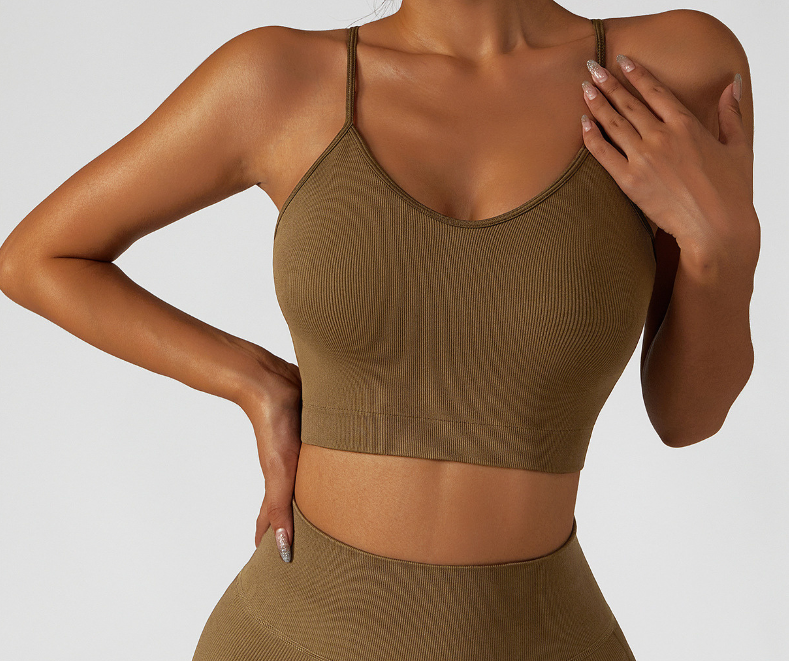
SOURCE REFERENCE - NOT FOR PUBLICATION1. Exact Drive source: frontUnaltered copy
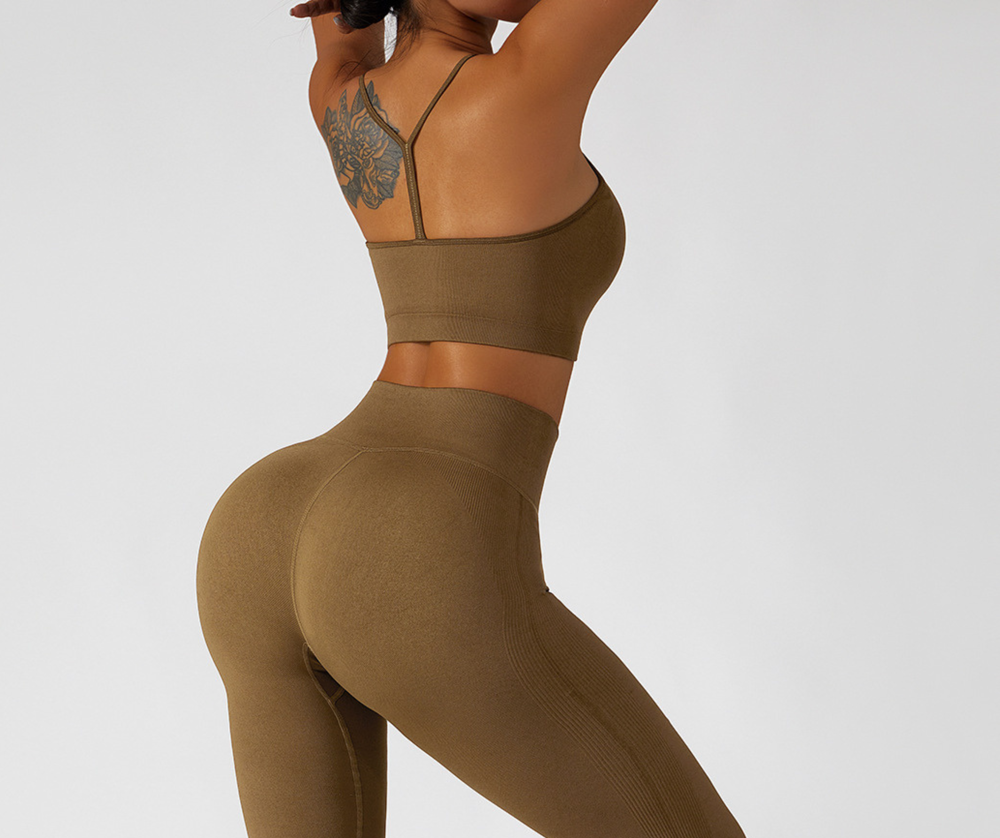
SOURCE REFERENCE - NOT FOR PUBLICATION2. Exact Drive source: backUnaltered copy
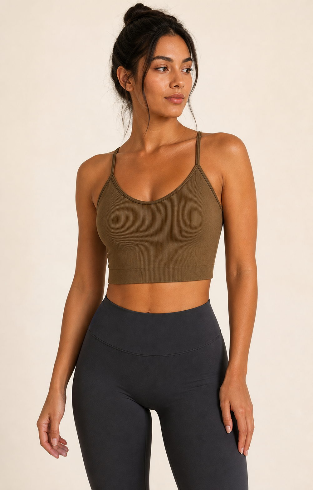
GENERATED MODEL REVIEW3. Hero / three-quarterSource-locked construction review
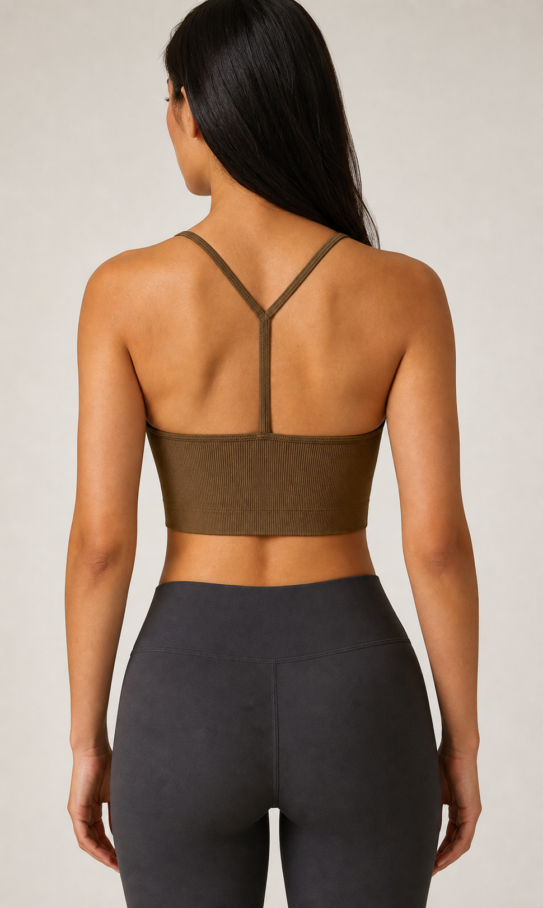
GENERATED MODEL REVIEW4. BackCentre-back racer construction review
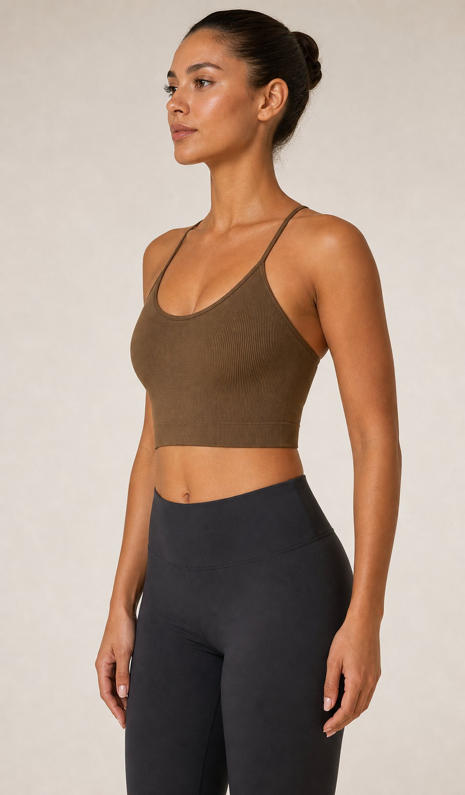
GENERATED MODEL REVIEW5. SideArmhole, band and rib review
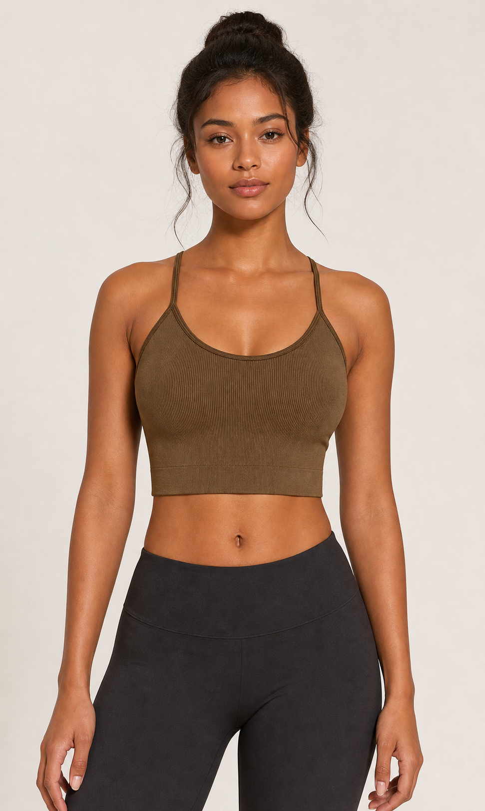
GENERATED MODEL REVIEW6. FrontNeckline, straps and band review
Plum review
The first image is the unaltered historical Plum Drive reference. The model images are draft-only source-locked review material.
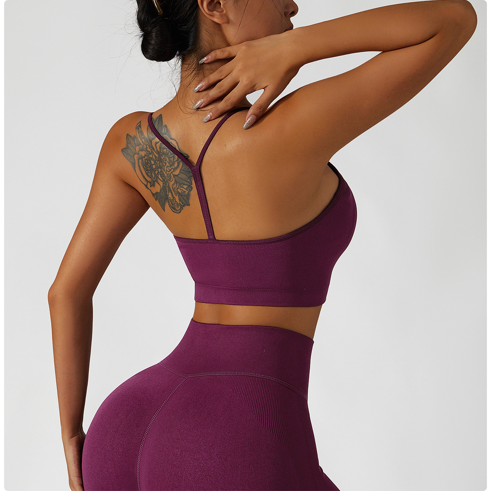
SOURCE REFERENCE - NOT FOR PUBLICATION1. Exact Drive source: Plum backUnaltered copy
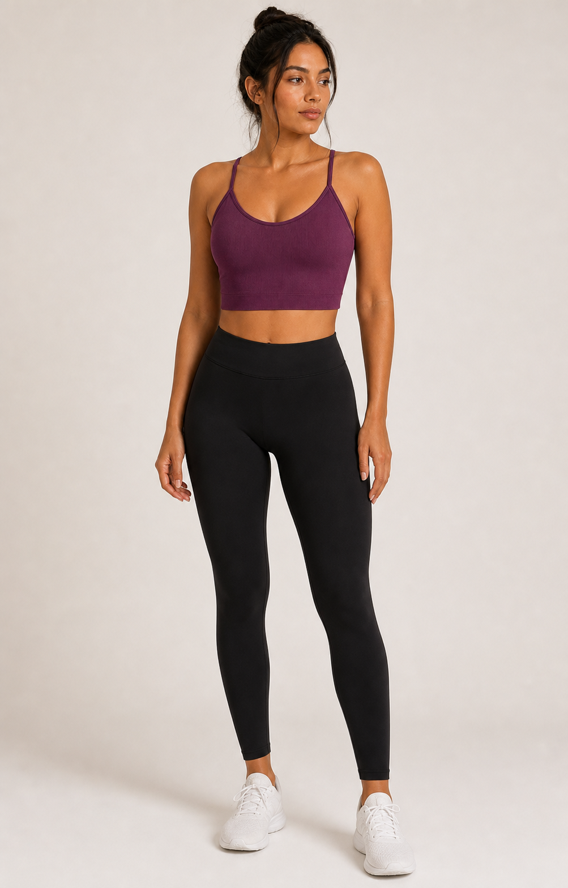
GENERATED MODEL REVIEW2. Hero / three-quarterSource-locked construction review
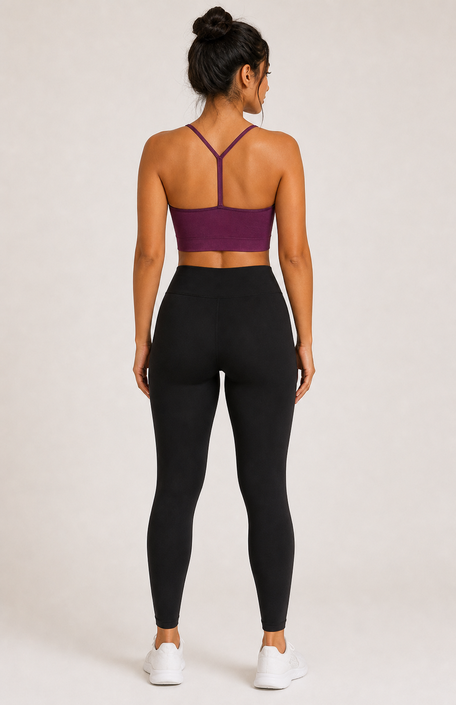
GENERATED MODEL REVIEW3. BackCentre-back racer construction review
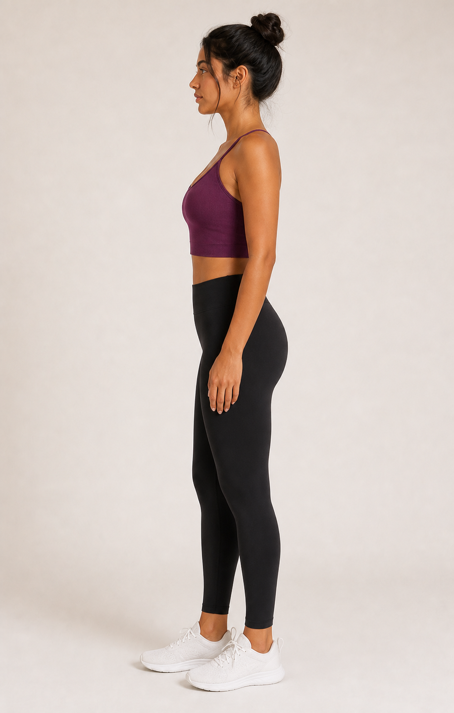
GENERATED MODEL REVIEW4. SideArmhole, band and rib review
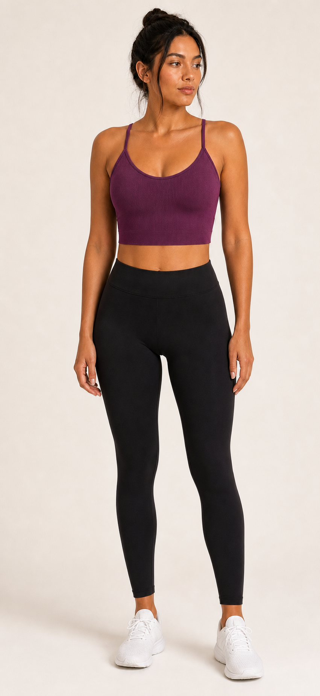
GENERATED MODEL REVIEW5. FrontNeckline, straps and band review
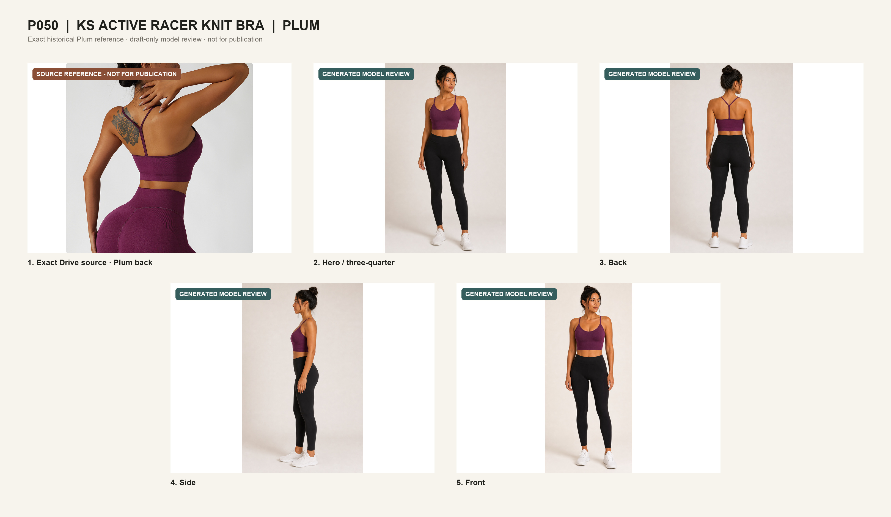
Source-accuracy inspection
Each generated view is compared to its exact source reference and a native-pixel garment crop.
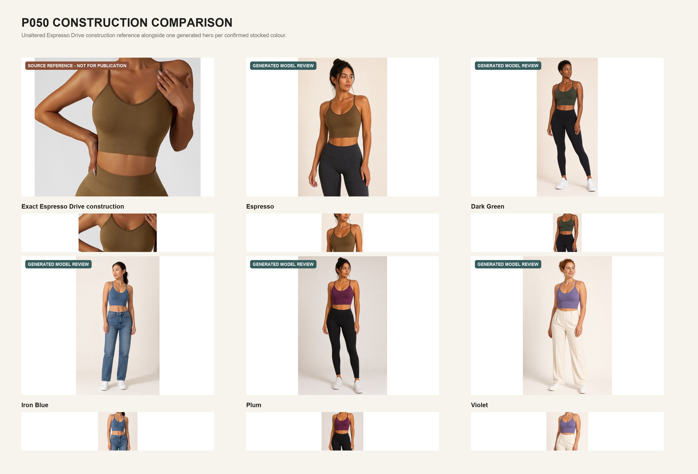
Evidence gate: Dark Green, Iron Blue and Violet remain blocked because their manual labels do not have an exact source or physical-label photograph. Similar historic Sage Green, Navy and Grape sources are not substitutes. No Drive rename, catalogue integration, Zoho or intranet update, merge, or production deployment is authorised.